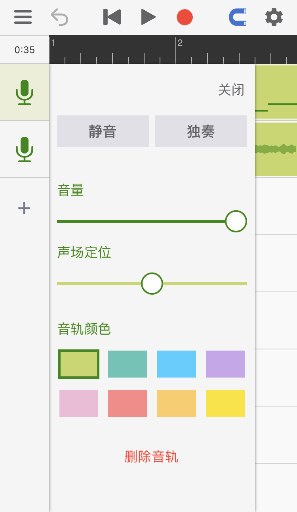
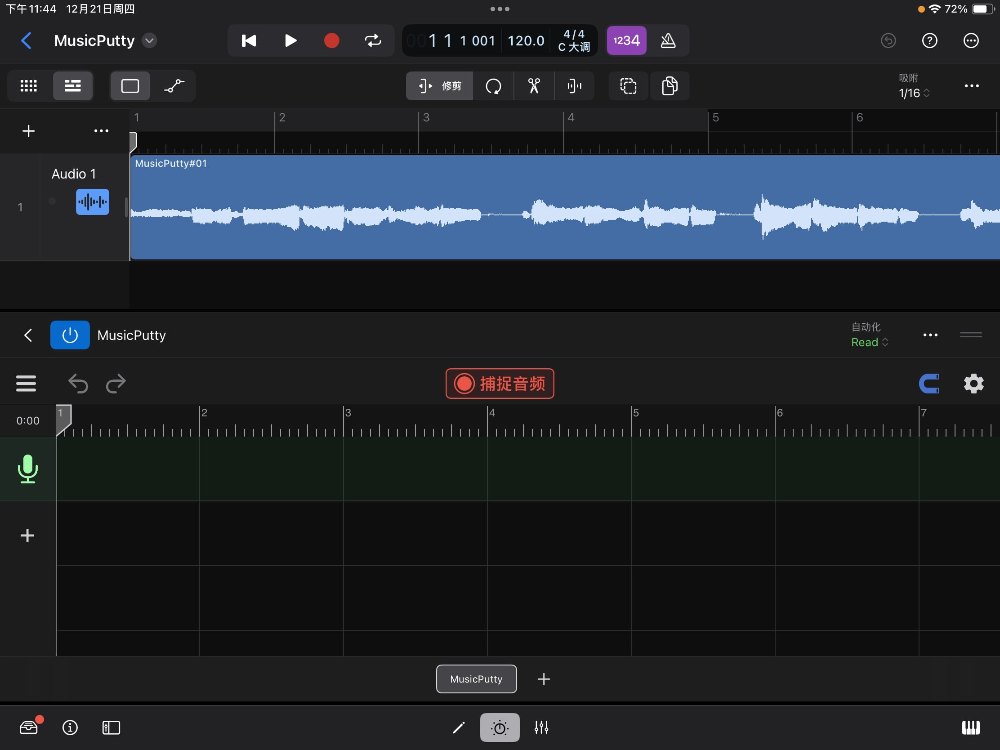
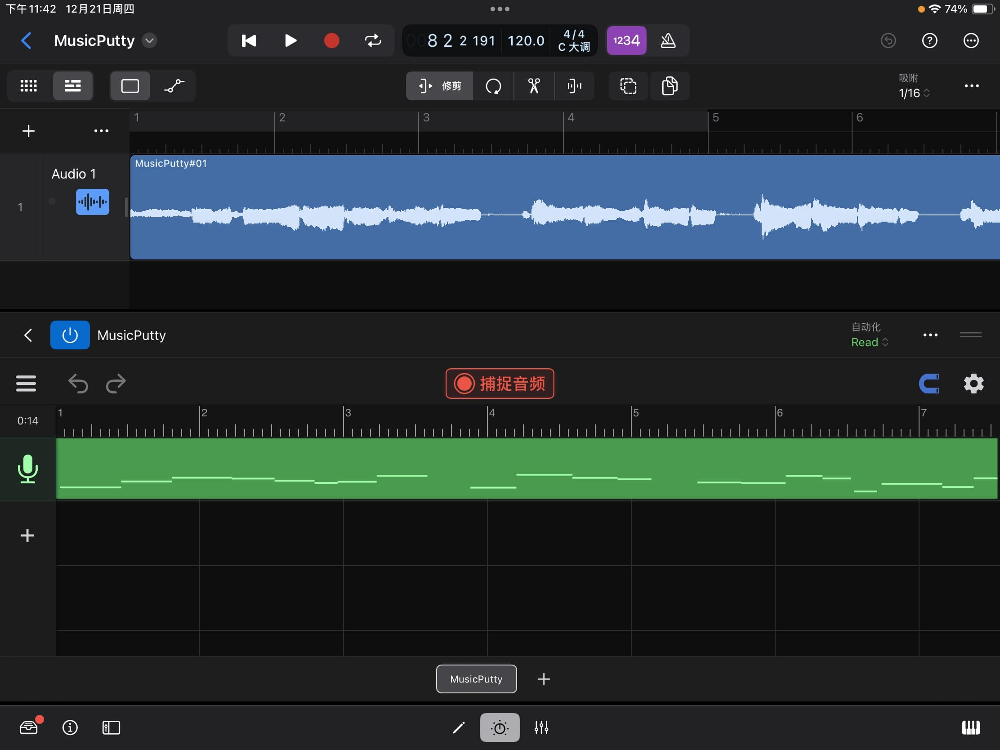

操作指南
音乐黏土是一款强大的音高编辑工具。当使用音乐黏土录歌时，程序会通过算法分析人声的音高，并且允许用户对每一个音符的音高进行修改。音乐粘土在拥有强大功能的同时也拥有简单的界面和清晰的流程指引，用户只需要了解了下面两个程序页面便可轻松使用。
工程页面
打开程序后，用户最先看到的是工程页面。在工程页面下用户可以添加音轨、录制人声并摆放已经录好的片段。

1
菜单: 这里有保存，读取和导出按钮。
2
撤消: 使用此按钮可以撤消对工程文件所做的更改。在较小的屏幕上运行时，长按撤消按钮会出现恢复按钮。其它时候，恢复按钮会出现在撤消按钮旁边。
3
指针重置，播放，录音。
4
对齐网格: 点亮后所拖动的东西会自动对齐网格。
5
设置: 这里有节拍器、速度、拍子记号和实时监听的设置。
6
音轨图标: 点一次会选中此音轨，点两次可以打开音轨的设置面板。每个音轨的设置面板里都包含常见的声道控件，例如静音/独奏，音量和声场定位。同时也可以在这里改变音轨的颜色。

7
添加音轨: 点这里可以添加空音轨、伴奏音频或把人声音频文件导入进音乐黏土中分析并修改。（“导入第三方人声音频”的功能需要解锁专业版本）
8
人声音频: 人声音频上的微型图展示了音频里所有的音符，双击人声音频可以进入音高编辑页面。
9
伴奏音频: 伴奏音频会以声波图的形式显示在界面上。
音高编辑页面
在音高编辑页面里你可以对每一个音符的音高进行修改。（通过双击人声音频来打开该页面）

1
有调音符: 方形的轮廓代表音符的大致音高。轮廓里的线条代表了在每一时刻的精准音高。
2
无调音符: 没有线条的浅色音符代表无音调的声音，这些声音可以是呼吸，混响或环境噪音。
3
主工具: 用来调整音符的音高和音符的起始时间。
4
音符分离工具: 用来切分或合并音符。

4.a
位置标记: 移动它到你需要切割的位置，到位后点击位置标记（或者上拉）即可把当前音符一分为二。
4.b
合并按钮（左）: 点击此处可以让当前音符和左边的音符合并。
4.c
合并按钮（右）: 点击此处可以让当前音符和右边的音符合并。
5
颤音工具（专业版功能）：使用此工具可更改每个音符中的颤音幅度。选择颤音工具后，你可以在所选音符上向上拖动以放大其颤音或向下拖动以拉平其颤音。

6
连音工具（专业版功能）：选择了连音工具后，单击音符将出现一个连音拖扭。用户可通过拖动此拖钮来更改音高在两个音符之间过渡的速度。

6.a
连音托扭: 如需让两个音符之间的过渡变慢，将这个手柄向左拖动，如需让过渡更快，则将手柄向右拖动。
7
声线工具（专业功能）：此工具可以用来改变人声的声线。此处声线代表的是人声信号在频谱上的大致形状。体型较大的歌手通常会发出低沉的声音（能量集中在较低频率的频谱）。另一方面，身体较小的歌手通常声音更明亮（能量集中在更高的频率上）。使用声线工具，你可以通过重塑人声在频谱上的能量分布来创造新奇的效果。

7.a
声线块： 选择声线工具后，每个音符上都会出现一个透明的方块。可通过向上或向下拖动此透明方块以更改音符的声线。
Plugin Mode
With the introduction of version 2.0, MusicPutty can now be loaded as an AUv3 plugin within your preferred DAWs. This eliminates the need to transfer audio tracks back and forth between your DAW and MusicPutty while working on a song. Now, you can access MusicPutty's pitch editing tools directly within your DAW's UI.
Load MusicPutty in DAWs
Once you have recorded vocals inside your DAW, you can load MusicPutty by adding it as an insert effect to the vocal track. The following screenshot shows how to do this in Garageband. For instructions on loading insert effects, please consult your DAW's manual.

When adding MusicPutty to an effect chain, it is recommended that you place MusicPutty as close to the beginning of the effect chain as possible. The only effects that should come before MusicPutty are those meant for cleaning the signal, such as a noise gate or other noise reduction plugins. This ensures MusicPutty can capture a clean signal without any audio effects applied, and it leaves the option open for you to add different effects later down the road.
Select Where to Store Plugin's Data
When setting up a new instance of MusicPutty, the plugin prompts you to select a storage location for its data. You have two choices: either embed the data within the host's project file or save it in an external ".mputty" file. The recommended option is to embed the data in the host's project, which simplifies file management when transferring the project to another device. If you select the other option, you will need to copy both the host's project file along with all the ".mputty" files when transferring your work to a different device. Note that this embedding option is supported by most major DAWs, except for Cubasis. If you are using Cubasis, please choose the other option "store in a separate local file".

Capture Audio from DAWs
Before MusicPutty can process your vocals, it needs to capture them from the DAW. Begin by clicking the 'CAPTURE' button to activate MusicPutty's audio capture mode. Then, place the host's playhead at the start of the vocal clip you want to capture and press the host's play button. MusicPutty will start capturing the audio as it flows through the track's effect chain. Press the 'STOP' button once you have captured everything.

Click on the "CAPTURE" button to put the plugin into audio capture mode.

Move the host's playhead to the start of the vocal clip you would like to capture and hit play. Click "STOP" once you are done.

After the audio has been captured, MusicPutty will start to analyze its pitch content. Once that is done, you can start editing your vocals.
DAW Compatibility Tips
Audio plugins on iOS communicate with their hosts through a protocol known as Audio Unit v3 (AUv3). In practice, AUv3 is a loosely defined standard, and each host interacts with its plugins in slightly different ways. Here are a few things you need to be aware of when running MusicPutty under different hosts
Garageband & Logic Pro
Both Garageband and Logic Pro impose restrictions on when an effect plugin is allowed to output audio. If the DAW does not see any audio clip on one of its tracks, the DAW will stop querying audio from all the plugins inserted on that track. That means when moving or importing clips in MusicPutty, you must make sure the same clips are also moved or imported on the host's timeline. Otherwise, the DAW may think there is nothing to render and stop querying audio from MusicPutty.
Cubasis
On Cubasis, you must select the option 'In a separate local file' when the plugin asks where you would like to store its data. Cubasis can't handle plugins with save file larger than a few megabytes. This limitation is a result of how Cubasis implements its undo system. Every time you open and close a plugin's UI in Cubasis, the DAW saves a copy of the plugin's state onto its undo stack. While this approach worked in the early days when most plugins were basic effects with a few parameters, it doesn't work well for today's complex plugins like MusicPutty. We have communicated this issue to the Cubasis team and will continue to work with them, hopefully have this problem addressed in the future.
Auria & Auria Pro
There is currently a bug in Auria where the DAW does not supply its audio effects with transport information during mixdown and channel freeze. To work around this problem, first, export your MusicPutty project as audio files using the plugin's built-in export feature and place the exported audio files onto your vocal tracks inside Auria. Then, bypass all MusicPutty instances before starting mixdown in Auria. We have communicated this issue to the Auria team and will continue to work with them, hopefully have this problem addressed in the future.
N-Track Studio
N-Track Studio sometimes supplies inaccurate transport information to its plugins. When capturing audio in N-Track Studio, please make sure you set 'Audio Capture Mode' to 'Compatibility Mode'. Otherwise, MusicPutty would interpret those inaccurate transport signals as a jump in the host's playhead and stop an ongoing audio capture prematurely.